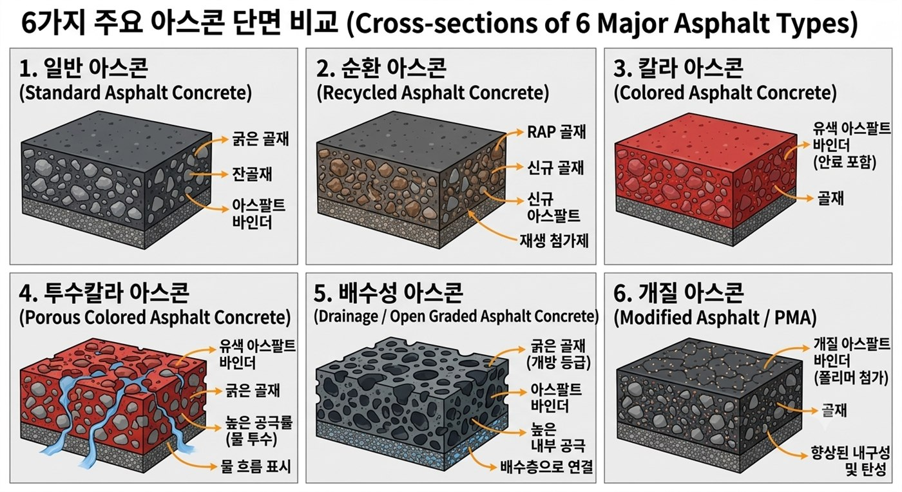
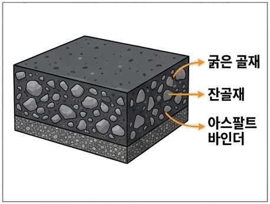
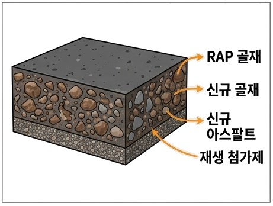
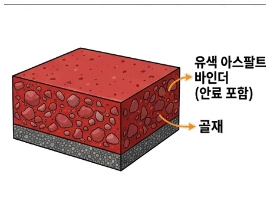
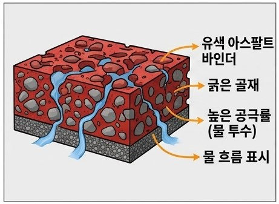
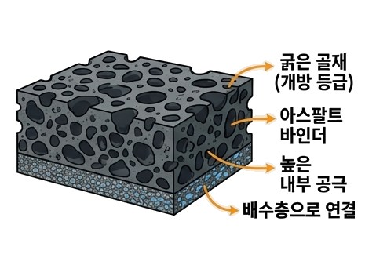
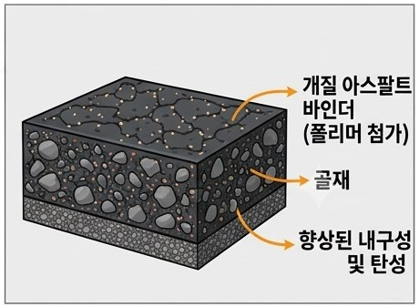

아스팔트 포장의 구성 및 종류
밀실한 입도로 미끄럼 방지, 빗물 침투 차단. 차량 타이어가 직접 닿는 층으로 평탄성과 소음 저감 효과 우수.
전단응력 완화, 하중을 하부 기층에 고르게 전달. 프라임 코트·택 코트로 상·하부 층 단단히 접착.
굵은 골재 사용, 도로 전체의 휨 저항력과 하중을 지지하는 포장 구조의 뼈대.
상부 하중을 노상으로 분산, 쇄석·자갈 층으로 지지력 확보 및 배수.
자갈·모래 사용, 겨울철 지반이 얼어 솟아오르는 동상 현상 차단.
다져진 최하부 토사 지반, 도로의 최종 하중 지지.
아스콘의 종류


일반 아스콘 Standard Asphalt Concrete
아스팔트 바인더에 굵은 골재·잔골재·채움재를 150~180℃ 고온에서 가열·혼합해 만든 가장 보편적인 도로 포장재. 우리가 흔히 보는 검은색 아스팔트 도로 대부분이 이 아스콘으로 시공됩니다.

순환 아스콘 Recycled Asphalt Concrete
폐아스콘을 파쇄·선별한 순환골재를 일정 비율 섞어 만든 친환경·경제적 포장재. 특수 중차량 구간보다는 일반적인 하중의 도로 전반에 폭넓게 사용됩니다.

칼라 아스콘 Colored Asphalt Concrete
무색 바인더나 합성수지에 색소를 더해 원하는 색상을 낸 기능성 포장재. 우수한 시공성·내구성은 유지하면서 미관과 안전을 동시에 확보해 자전거도로·산책로·버스전용차로에 주로 쓰입니다.

투수칼라 아스콘 Porous Colored Asphalt Concrete
빗물이 표면에 고이지 않고 내부 공극을 통해 지면으로 스며들도록 만든 친환경 기능성 포장재. 굵은 골재 위주로 배합해 투수 통로를 확보했으며, 보행자 공간이나 경하중 구역에 주로 적용됩니다.

배수성 아스콘 Drainage / Open Graded Asphalt Concrete
빗물이 표면에 고이지 않고 내부 공극을 통해 빠르게 배수되도록 설계된 고기능성 포장재. 고속도로·자동차전용도로 등 차량 통행이 많은 도로에 적용되어 빗길 안전성과 소음 저감 효과가 뛰어납니다.

개질 아스콘 Modified Asphalt / PMA
특수 폴리머를 첨가해 하중과 온도 변화에 강하게 버티도록 성능을 높인 고기능성 포장재. 하중이 무겁고 가속·감속이 빈번한 특수 구간에 주로 적용되는 프리미엄 도로 포장재입니다.